Demultiplexing the BAL pool: BP3 (capture1)
Anson Wong
2026-04-24
Last updated: 2026-04-24
Checks: 7 0
Knit directory: cf-eti-bal-scrna/
This reproducible R Markdown analysis was created with workflowr (version 1.7.0). The Checks tab describes the reproducibility checks that were applied when the results were created. The Past versions tab lists the development history.
Great! Since the R Markdown file has been committed to the Git repository, you know the exact version of the code that produced these results.
Great job! The global environment was empty. Objects defined in the global environment can affect the analysis in your R Markdown file in unknown ways. For reproduciblity it’s best to always run the code in an empty environment.
The command set.seed(20260422) was run prior to running the code in the R Markdown file. Setting a seed ensures that any results that rely on randomness, e.g. subsampling or permutations, are reproducible.
Great job! Recording the operating system, R version, and package versions is critical for reproducibility.
Nice! There were no cached chunks for this analysis, so you can be confident that you successfully produced the results during this run.
Great job! Using relative paths to the files within your workflowr project makes it easier to run your code on other machines.
Great! You are using Git for version control. Tracking code development and connecting the code version to the results is critical for reproducibility.
The results in this page were generated with repository version 22814cb. See the Past versions tab to see a history of the changes made to the R Markdown and HTML files.
Note that you need to be careful to ensure that all relevant files for the analysis have been committed to Git prior to generating the results (you can use wflow_publish or wflow_git_commit). workflowr only checks the R Markdown file, but you know if there are other scripts or data files that it depends on. Below is the status of the Git repository when the results were generated:
Ignored files:
Ignored: .DS_Store
Ignored: ._.DS_Store
Ignored: code/._bal_RecM.integration_clustering.R
Ignored: data/._README.md
Ignored: data/AM.markers.csv
Ignored: data/DE/AM-CCL/CFB_vs_C/
Ignored: data/DE/AM-CCL/CFN_vs_C/
Ignored: data/DE/AM-CCL/CFN_vs_CFB/GO_BP/
Ignored: data/DE/AM-CCL/CFN_vs_CFB/GO_CC/
Ignored: data/DE/AM-CCL/CFN_vs_CFB/GO_MF/
Ignored: data/DE/AM-CCL/CFN_vs_CFB/Reactome/
Ignored: data/DE/AM-CCL/CFN_vs_CFB/WikiPathway/
Ignored: data/DE/Prolif M/CFB_vs_C/GO_BP/
Ignored: data/DE/Prolif M/CFB_vs_C/GO_CC/
Ignored: data/DE/Prolif M/CFB_vs_C/GO_MF/
Ignored: data/DE/Prolif M/CFB_vs_C/Reactome/
Ignored: data/DE/Prolif M/CFB_vs_C/WikiPathway/
Ignored: data/DE/Prolif M/CFN_vs_C/
Ignored: data/DE/ruv/
Ignored: data/Fig3A.stat.csv
Ignored: data/Li.stat.csv
Ignored: data/Liao.stat.csv
Ignored: data/Major.markers.csv
Ignored: data/Morrell.stat.csv
Ignored: data/Present.stat.csv
Ignored: data/RecM.markers.csv
Ignored: data/SCEs
Ignored: data/Wendisch.stat.csv
Ignored: data/cellbender
Ignored: data/cytokine
Ignored: data/plots
Ignored: data/sample_sheets
Ignored: data/vireo
Ignored: output/plots/combined/
Note that any generated files, e.g. HTML, png, CSS, etc., are not included in this status report because it is ok for generated content to have uncommitted changes.
These are the previous versions of the repository in which changes were made to the R Markdown (analysis/01.demux_capture1.Rmd) and HTML (docs/01.demux_capture1.html) files. If you’ve configured a remote Git repository (see ?wflow_git_remote), click on the hyperlinks in the table below to view the files as they were in that past version.
| File | Version | Author | Date | Message |
|---|---|---|---|---|
| Rmd | 22814cb | tcwong1994 | 2026-04-24 | Build site |
knitr::opts_chunk$set(warning = FALSE, message = FALSE)
xaringanExtra::use_panelset()1 Load packages
suppressPackageStartupMessages({
library(DropletUtils)
library(here)
library(ggplot2)
library(Seurat)
library(cowplot)
library(patchwork)
library(scater)
library(dplyr)
library(vcfR)
library(janitor)
library(stringr)
library(forcats)
})
set.seed(1990)2 Set names for this pool
# Specify batch name
batch_name <- "capture1"
num_of_captures <- 4
# Specify capture name
capture_names <- c(paste0(batch_name, "-",1:num_of_captures))
capture_names <- setNames(capture_names, capture_names)
# Assign sample ID to HTO ID
# Manually list sample names matching HTO id (in alphabetical order)
samples <- c("M1C188", #HTO3
"M1C188B", #HTO6
"M1C160(1)", #HTO7
"M1C160F", #HTO8
"M1C170C", #HTO10
"M1C170D", #HTO12
"M1C176", #HTO13
"M1C176C", #HTO14
"M1N092", #HTO15
"M1N075" #HTO16
)3 Read CellBender outputs
Ambient RNA and empty droplets were removed by CellBender (see code/cellbender.sh).
captures <- setNames(
here("data",
"cellbender",
capture_names,
paste0(capture_names,".cellbender_filtered.h5")),
capture_names)
sce <- read10xCounts(samples = captures, col.names = TRUE)
stopifnot(!anyDuplicated(colnames(sce)))
sce <- splitAltExps(
sce,
rowData(sce)$Type,
"Gene Expression")
# Tidy up colData
sce$Capture <- factor(sce$Sample)
capture_names <- levels(sce$Capture)
capture_names <- setNames(capture_names, capture_names)
sce$Sample <- NULL
# Number of droplets after CellBender
dim(sce)[1] 36601 1430494 HTO demultiplexing
HTODemux from the Seurat package was used to demultiplex droplets. Demultiplexing was performed separately on each capture.
4.1 Prepare HTO data
# change DelayedMatrix to dgCMatrix
assay(sce, "counts") <- as(assay(sce, "counts"), "dgCMatrix")
# Read features.csv used in cellranger multi
features <- read.csv(here("data",
"sample_sheets",
paste0(batch_name,".features.csv")))
# HTO id are always in alphabetical order
features id name read pattern sequence feature_type
1 Human_HTO_3 Human_HTO_3 R2 5P(BC) TTCCGCCTCTCTTTG Antibody Capture
2 Human_HTO_6 Human_HTO_6 R2 5P(BC) GGTTGCCAGATGTCA Antibody Capture
3 Human_HTO_7 Human_HTO_7 R2 5P(BC) TGTCTTTCCTGCCAG Antibody Capture
4 Human_HTO_8 Human_HTO_8 R2 5P(BC) CTCCTCTGCAATTAC Antibody Capture
5 Human_HTO_10 Human_HTO_10 R2 5P(BC) ATTGACCCGCGTTAG Antibody Capture
6 Human_HTO_12 Human_HTO_12 R2 5P(BC) TAACGACCAGCCATA Antibody Capture
7 Human_HTO_13 Human_HTO_13 R2 5P(BC) AAATCTCTCAGGCTC Antibody Capture
8 Human_HTO_14 Human_HTO_14 R2 5P(BC) CTGTATGTCCGATTG Antibody Capture
9 Human_HTO_15 Human_HTO_15 R2 5P(BC) TAAGATTCAGAGCGA Antibody Capture
10 Human_HTO_16 Human_HTO_16 R2 5P(BC) CTCAGTGCATTCTGG Antibody Capture# Rename assay
is_hto <- grepl("^Human_HTO", rownames(altExp(sce, "Antibody Capture")))
altExp(sce, "HTO") <- altExp(sce, "Antibody Capture")[is_hto, ]
altExp(sce, "Antibody Capture") <- NULL4.2 HTO Demultiplexing
# load in umi and hto matrix
umis <- counts(sce)
htos <- counts(altExp(sce))
# Select cell barcodes detected by both RNA and HTO
joint.bcs <- intersect(colnames(umis), colnames(htos))
# Subset RNA and HTO counts by joint cell barcodes
umis <- umis[, joint.bcs]
htos <- as.matrix(htos[, joint.bcs])
# Confirm that the HTO have the correct names
rownames(htos) [1] "Human_HTO_3" "Human_HTO_6" "Human_HTO_7" "Human_HTO_8" "Human_HTO_10"
[6] "Human_HTO_12" "Human_HTO_13" "Human_HTO_14" "Human_HTO_15" "Human_HTO_16"# Perform demultiplexing separately on each capture
obj.list <- list()
lappend <- function (lst, ...){
lst <- c(lst, list(...))
return(lst)
}
for (cn in capture_names) {
message(cn)
umi = as.matrix(umis[, sce$Capture == cn])
hto = as.matrix(htos[, sce$Capture == cn])
# Setup Seurat object
hashtag <- CreateSeuratObject(counts = umi)
# Normalize RNA data with log normalization
hashtag <- NormalizeData(hashtag)
# Find and scale variable features
hashtag <- FindVariableFeatures(hashtag, selection.method = "mean.var.plot")
hashtag <- ScaleData(hashtag, features = VariableFeatures(hashtag))
# Add HTO data as a new assay independent from RNA
hashtag[["HTO"]] <- CreateAssayObject(counts = hto)
# Normalize HTO data, here we use centered log-ratio (CLR) transformation
hashtag <- NormalizeData(hashtag, assay = "HTO", normalization.method = "CLR")
# Demultiplex cells based on HTO enrichment
hashtag <- HTODemux(hashtag, assay = "HTO", positive.quantile = 0.99)
# Rename hash.ID column
hashtag$hash.ID <- factor(gsub("-","_",hashtag$hash.ID),
levels = c(features$id, "Doublet", "Negative"))
obj.list <- lappend(obj.list, hashtag)
}
names(obj.list) <- capture_names
hashtag <- NULL4.3 Add HTO demultiplexing results to SCE
# add hash.ID column to SCE object
hash.ID <- Reduce(c,
lapply(obj.list, function(x)
setNames(x@meta.data$hash.ID, colnames(x))))
sce$HTODemux.ID <- hash.ID
# Store HTODemux results to SCE object
sce$HTODemux_result <- bind_rows(lapply(obj.list, function(x) x@meta.data))
# Add sample ID to SCE object
sampleID.HTO <- setNames(c(samples,"Doublet","Negative"), levels(sce$HTODemux.ID))
sampleID.HTO <- sampleID.HTO[sce$HTODemux.ID]
names(sampleID.HTO) <- colnames(sce)
sce$sampleID.HTO <- factor(sampleID.HTO, levels=c(samples,"Doublet","Negative"))5 Visualize HTO demultiplexing results
Some code in this section are adapted from internal code by Dr. Peter F. Hickey.
# add colour
sce$colours <- S4Vectors::make_zero_col_DFrame(ncol(sce))
hto_colours <- setNames(
c(palette.colors(nlevels(sce$HTODemux.ID)-2, "Tableau 10"),"#ced4da","#6c757d"),
levels(sce$HTODemux.ID))
sce$colours$hto_colours <- hto_colours[sce$HTODemux.ID]
sample_colours <- setNames(
c(palette.colors(nlevels(sce$sampleID.HTO)-2, "Tableau 10"),"#ced4da","#6c757d"),
levels(sce$sampleID.HTO))
sce$colours$sample_colours <- sample_colours[sce$sampleID.HTO]
capture_colours <- setNames(
palette.colors(nlevels(sce$Capture), "Accent"),
levels(sce$Capture))
sce$colours$capture_colours <- capture_colours[sce$Capture]5.1 Number of singlets
capture1-1
table(obj.list$`capture1-1`$HTO_classification.global)
Doublet Negative Singlet
10121 3829 21700 capture1-2
table(obj.list$`capture1-2`$HTO_classification.global)
Doublet Negative Singlet
9964 2799 22041 capture1-3
table(obj.list$`capture1-3`$HTO_classification.global)
Doublet Negative Singlet
8740 4912 24196 capture1-4
table(obj.list$`capture1-4`$HTO_classification.global)
Doublet Negative Singlet
8810 2823 23114 5.2 HTO expression in ridge plot
capture1-1
# Group cells based on the max HTO signal
Idents(obj.list$`capture1-1`) <- "hash.ID"
RidgePlot(obj.list$`capture1-1`, assay = "HTO",
features = rownames(obj.list$`capture1-1`[["HTO"]]))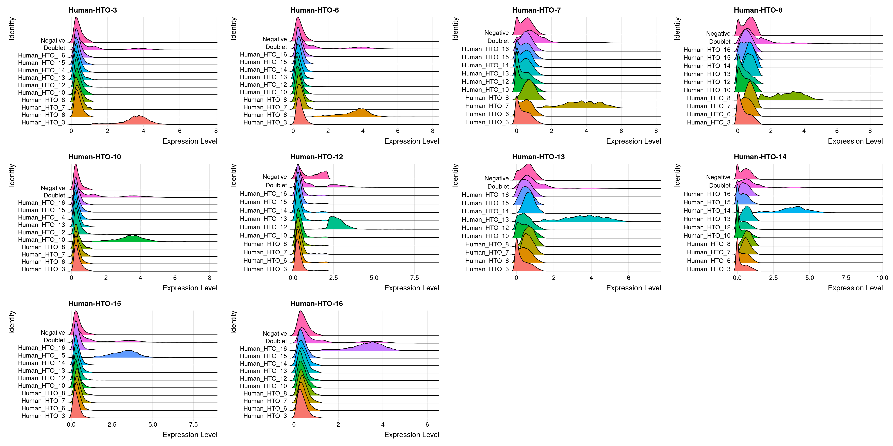
| Version | Author | Date |
|---|---|---|
| 22814cb | tcwong1994 | 2026-04-24 |
capture1-2
# Group cells based on the max HTO signal
Idents(obj.list$`capture1-2`) <- "hash.ID"
RidgePlot(obj.list$`capture1-2`, assay = "HTO",
features = rownames(obj.list$`capture1-2`[["HTO"]]))
| Version | Author | Date |
|---|---|---|
| 22814cb | tcwong1994 | 2026-04-24 |
capture1-3
# Group cells based on the max HTO signal
Idents(obj.list$`capture1-3`) <- "hash.ID"
RidgePlot(obj.list$`capture1-2`, assay = "HTO",
features = rownames(obj.list$`capture1-3`[["HTO"]]))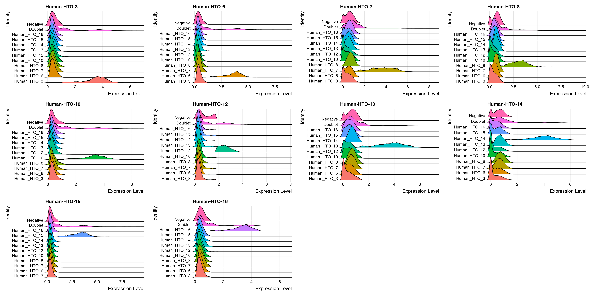
| Version | Author | Date |
|---|---|---|
| 22814cb | tcwong1994 | 2026-04-24 |
capture1-4
# Group cells based on the max HTO signal
Idents(obj.list$`capture1-4`) <- "hash.ID"
RidgePlot(obj.list$`capture1-4`, assay = "HTO",
features = rownames(obj.list$`capture1-4`[["HTO"]]))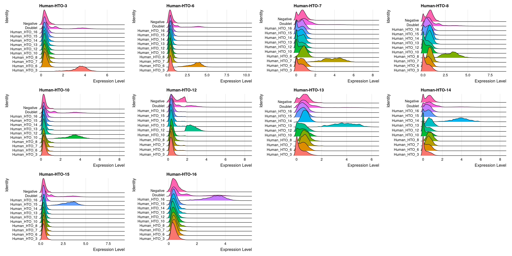
| Version | Author | Date |
|---|---|---|
| 22814cb | tcwong1994 | 2026-04-24 |
5.3 HTO expression in heatmap
capture1-1
HTOHeatmap(obj.list$`capture1-1`, assay = "HTO", ncells = 5000) +
ggtitle("capture1-1") +
theme(plot.title = element_text(hjust=0.5, size=10))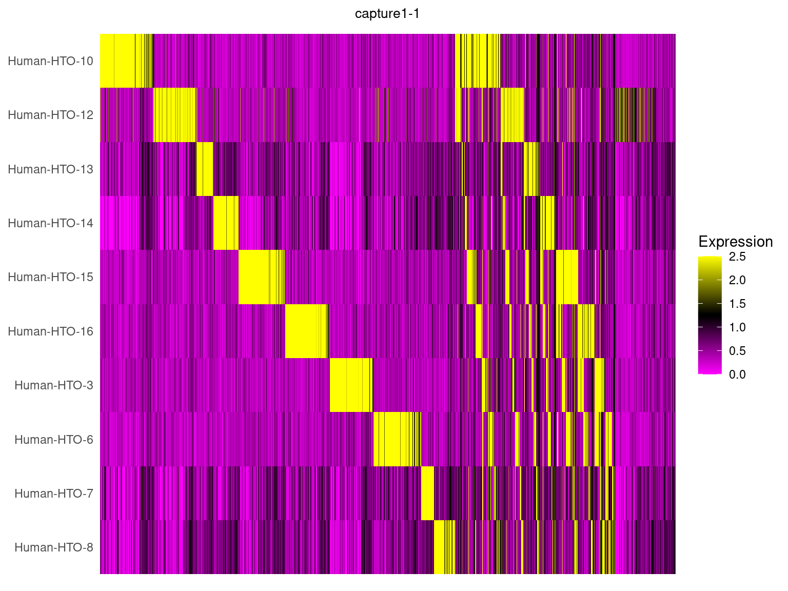
| Version | Author | Date |
|---|---|---|
| 22814cb | tcwong1994 | 2026-04-24 |
capture1-2
HTOHeatmap(obj.list$`capture1-2`, assay = "HTO", ncells = 5000) +
ggtitle("capture1-2") +
theme(plot.title = element_text(hjust=0.5, size=10))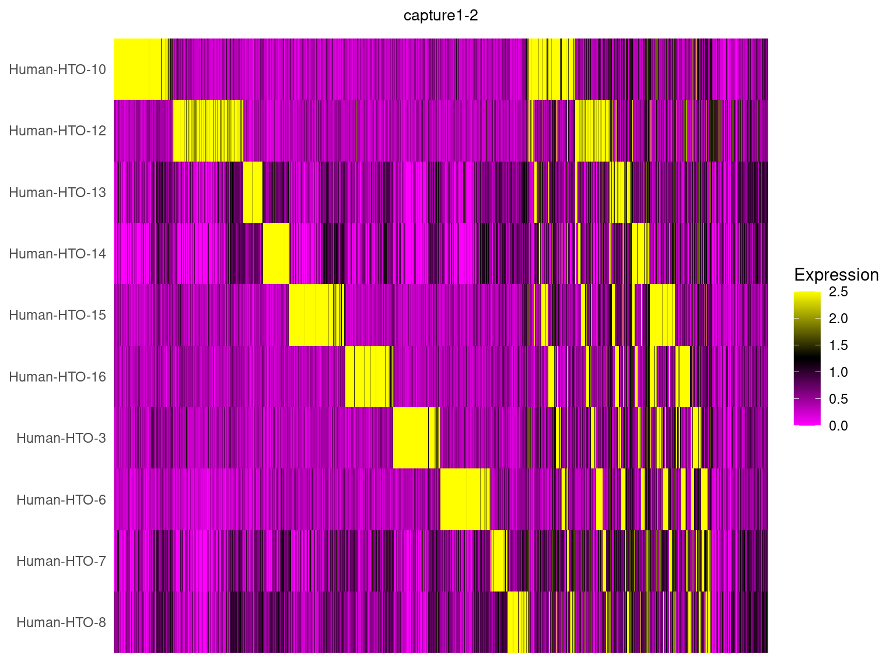
| Version | Author | Date |
|---|---|---|
| 22814cb | tcwong1994 | 2026-04-24 |
capture1-3
HTOHeatmap(obj.list$`capture1-3`, assay = "HTO", ncells = 5000) +
ggtitle("capture1-3") +
theme(plot.title = element_text(hjust=0.5, size=10))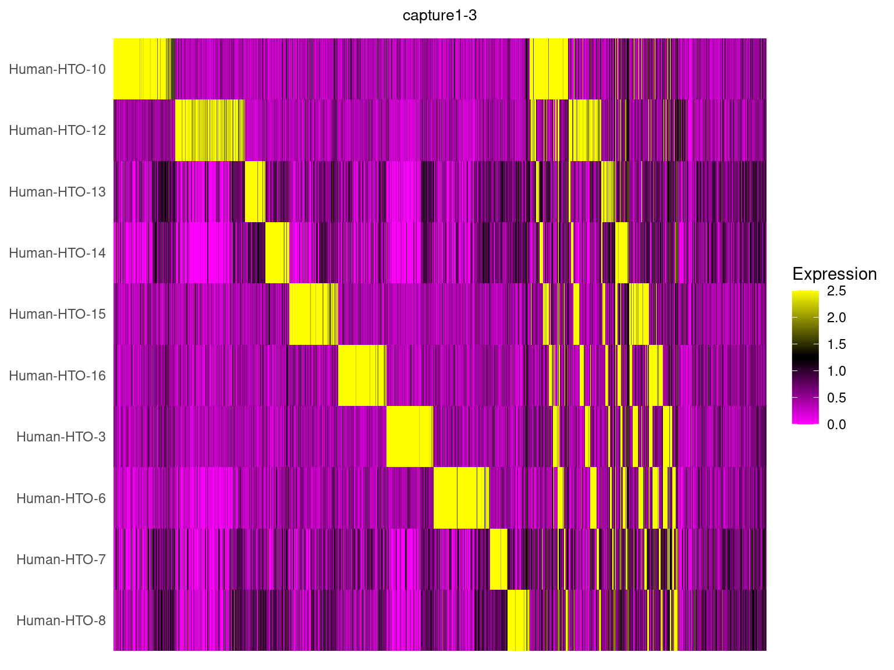
| Version | Author | Date |
|---|---|---|
| 22814cb | tcwong1994 | 2026-04-24 |
capture1-4
HTOHeatmap(obj.list$`capture1-3`, assay = "HTO", ncells = 5000) +
ggtitle("capture1-4") +
theme(plot.title = element_text(hjust=0.5, size=10))
| Version | Author | Date |
|---|---|---|
| 22814cb | tcwong1994 | 2026-04-24 |
5.4 tSNE embeddings for HTOs
capture1-1
# remove negative cells from the object
hashtag.subset <- subset(obj.list$`capture1-1`, idents = "Negative", invert = TRUE)
# calculate a tSNE embedding of the HTO data
DefaultAssay(hashtag.subset) <- "HTO"
hashtag.subset <- ScaleData(hashtag.subset, features = rownames(hashtag.subset))
hashtag.subset <- RunPCA(hashtag.subset, features = rownames(hashtag.subset), approx = FALSE)
hashtag.subset <- RunTSNE(hashtag.subset, dims = 1:length(rownames(hashtag.subset)),
perplexity = 100, check_duplicates = FALSE)
# tSNE plot
DimPlot(hashtag.subset)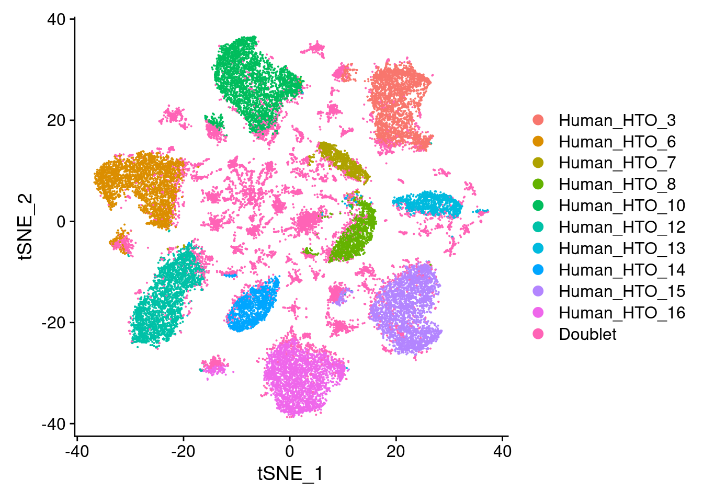
| Version | Author | Date |
|---|---|---|
| 22814cb | tcwong1994 | 2026-04-24 |
capture1-2
# remove negative cells from the object
hashtag.subset <- subset(obj.list$`capture1-2`, idents = "Negative", invert = TRUE)
# calculate a tSNE embedding of the HTO data
DefaultAssay(hashtag.subset) <- "HTO"
hashtag.subset <- ScaleData(hashtag.subset, features = rownames(hashtag.subset))
hashtag.subset <- RunPCA(hashtag.subset, features = rownames(hashtag.subset), approx = FALSE)
hashtag.subset <- RunTSNE(hashtag.subset, dims = 1:length(rownames(hashtag.subset)),
perplexity = 100, check_duplicates = FALSE)
# tSNE plot
DimPlot(hashtag.subset)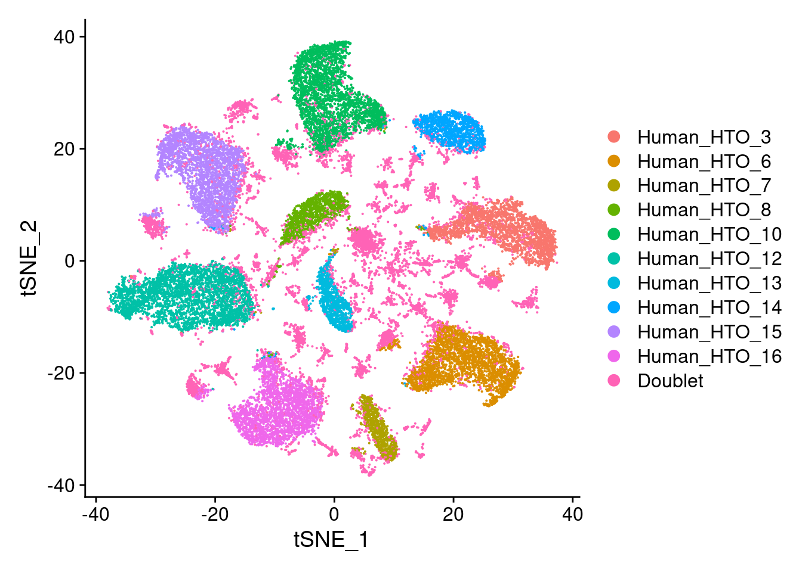
| Version | Author | Date |
|---|---|---|
| 22814cb | tcwong1994 | 2026-04-24 |
capture1-3
# remove negative cells from the object
hashtag.subset <- subset(obj.list$`capture1-3`, idents = "Negative", invert = TRUE)
# calculate a tSNE embedding of the HTO data
DefaultAssay(hashtag.subset) <- "HTO"
hashtag.subset <- ScaleData(hashtag.subset, features = rownames(hashtag.subset))
hashtag.subset <- RunPCA(hashtag.subset, features = rownames(hashtag.subset), approx = FALSE)
hashtag.subset <- RunTSNE(hashtag.subset, dims = 1:length(rownames(hashtag.subset)),
perplexity = 100, check_duplicates = FALSE)
# tSNE plot
DimPlot(hashtag.subset)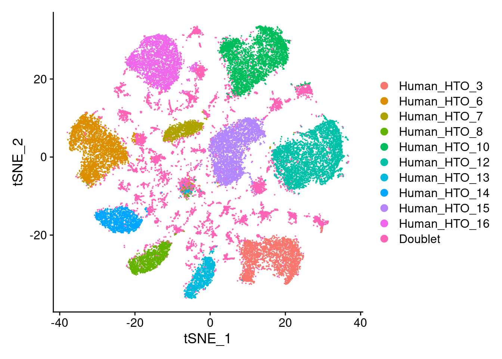
| Version | Author | Date |
|---|---|---|
| 22814cb | tcwong1994 | 2026-04-24 |
capture1-4
# remove negative cells from the object
hashtag.subset <- subset(obj.list$`capture1-4`, idents = "Negative", invert = TRUE)
# calculate a tSNE embedding of the HTO data
DefaultAssay(hashtag.subset) <- "HTO"
hashtag.subset <- ScaleData(hashtag.subset, features = rownames(hashtag.subset))
hashtag.subset <- RunPCA(hashtag.subset, features = rownames(hashtag.subset), approx = FALSE)
hashtag.subset <- RunTSNE(hashtag.subset, dims = 1:length(rownames(hashtag.subset)),
perplexity = 100, check_duplicates = FALSE)
# tSNE plot
DimPlot(hashtag.subset)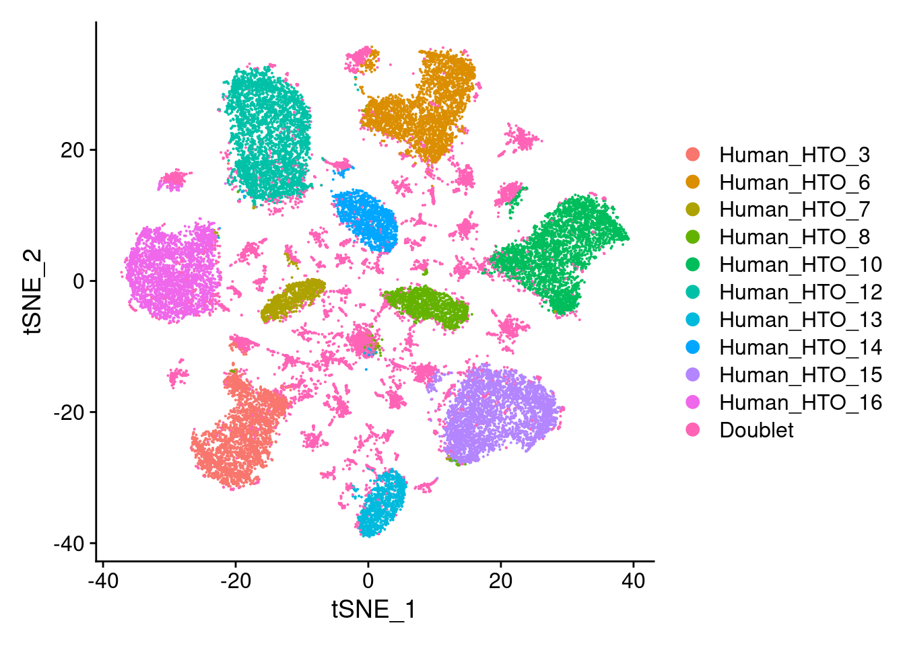
| Version | Author | Date |
|---|---|---|
| 22814cb | tcwong1994 | 2026-04-24 |
5.5 Number of demultiplexed droplets
df <- as.data.frame(colData(sce))Named by HTO
# Number of droplets per HTO classification
p1 <- ggplot(df) +
geom_bar(
aes(
x = factor(hash.ID, levels(sce$HTODemux.ID)),
fill=hash.ID),
position = position_stack(reverse = TRUE)) +
geom_text(stat='count', aes(x = hash.ID, label=..count..), hjust=1, size=2.5) +
coord_flip() +
scale_fill_manual(values = hto_colours) +
ylab("Number of droplets") +
xlab("HTODemux classification") +
theme_cowplot(font_size = 8) +
theme(axis.text.x = element_text(angle = 45, hjust = 1))
p1 + NoLegend() + p1 + facet_grid(~sce$Capture) + plot_layout(widths=c(1, length(capture_names)))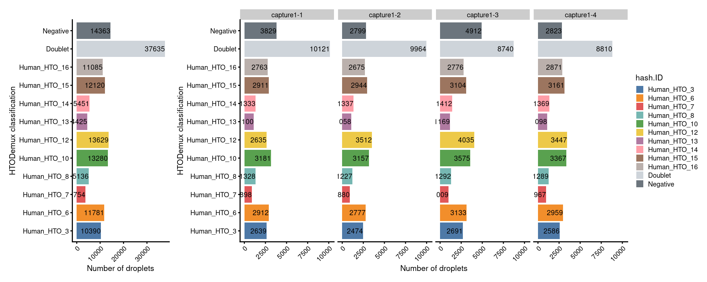
| Version | Author | Date |
|---|---|---|
| 22814cb | tcwong1994 | 2026-04-24 |
Named by sample ID
# Number of droplets per sample
p2 <- ggplot(df) +
geom_bar(
aes(
x = factor(sampleID.HTO, levels(sce$sampleID.HTO)),
fill=sampleID.HTO),
position = position_stack(reverse = TRUE)) +
geom_text(stat='count', aes(x = sampleID.HTO, label=..count..), hjust=1, size=2.5) +
coord_flip() +
scale_fill_manual(values = sample_colours) +
ylab("Number of droplets") +
xlab("Sample ID") +
theme_cowplot(font_size = 8) +
theme(axis.text.x = element_text(angle = 45, hjust = 1))
p2 + NoLegend() + p2 + facet_grid(~sce$Capture) + plot_layout(widths=c(1, length(capture_names)))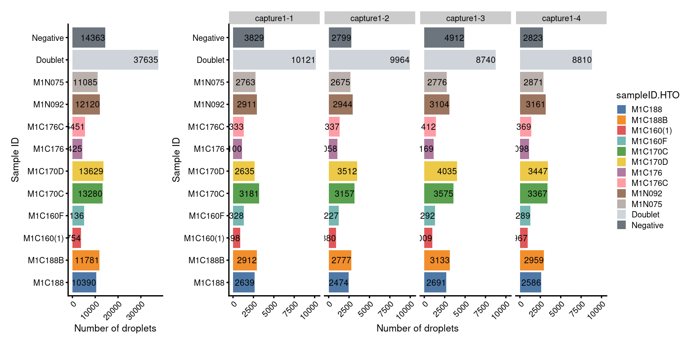
| Version | Author | Date |
|---|---|---|
| 22814cb | tcwong1994 | 2026-04-24 |
5.6 Proportion of singlets per capture
p3 <- ggplot(df) +
geom_bar(
aes(
x = Capture,
fill= HTODemux_result.HTO_classification.global),
position = position_fill(reverse = TRUE)) +
coord_flip() +
scale_fill_manual(values = setNames(c("#6c757d","#ced4da","#cfe1b9"),
c("Negative","Doublet","Singlet"))) +
ylab("Proportion of droplets") +
xlab("HTODemux classification") +
theme_cowplot(font_size = 8) +
theme(axis.text.x = element_text(angle = 45, hjust = 1))
p3 +
guides(fill=guide_legend(title="HTO_classification.global"))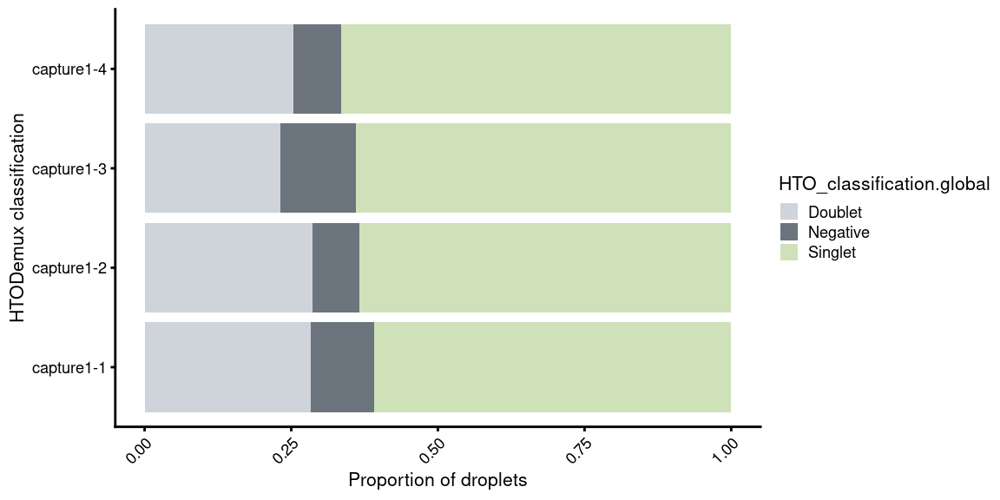
| Version | Author | Date |
|---|---|---|
| 22814cb | tcwong1994 | 2026-04-24 |
6 Genetic demultiplexing
Some code in this section are adapted from internal code by Dr. Peter F. Hickey.
SNPs were called from each capture using cellsnp-lite v1.2.3. Based on the SNP information, cells were assigned to genetic donors using vireo v0.5.8.
6.1 Read vireo results
vireo_df <- do.call(
rbind,
lapply(capture_names, function(cn) {
message(cn)
vireo_df <- read.table(
here("data", "vireo", cn, "donor_ids.tsv"),
header = TRUE)
# Rename 'doublet' and 'unassigned' to match the terms used in HTODemux
vireo_df$donor_id <- gsub("doublet", "Doublet", vireo_df$donor_id)
vireo_df$donor_id <- gsub("unassigned", "Negative", vireo_df$donor_id)
vireo_df$donor_id <- paste0(cn, "_", vireo_df$donor_id)
captureNumber <- str_sub(cn, start= -1)
vireo_df$colname <- paste0(captureNumber, "_", vireo_df$cell)
# reorder columns to matches SCE.
j <- match(colnames(sce)[sce$Capture == cn], vireo_df$colname)
stopifnot(!anyNA(j))
vireo_df <- vireo_df[j, ]
}))6.2 Summarise vireo results
knitr::kable(
tabyl(vireo_df, donor_id) %>%
adorn_pct_formatting(1),
caption = "Assignment of droplets to donors using vireo.")| donor_id | n | percent |
|---|---|---|
| capture1-1_Doublet | 3940 | 2.8% |
| capture1-1_Negative | 7151 | 5.0% |
| capture1-1_donor0 | 3307 | 2.3% |
| capture1-1_donor1 | 1785 | 1.2% |
| capture1-1_donor2 | 5844 | 4.1% |
| capture1-1_donor3 | 2948 | 2.1% |
| capture1-1_donor4 | 2290 | 1.6% |
| capture1-1_donor5 | 8385 | 5.9% |
| capture1-2_Doublet | 3445 | 2.4% |
| capture1-2_Negative | 7117 | 5.0% |
| capture1-2_donor0 | 2291 | 1.6% |
| capture1-2_donor1 | 8314 | 5.8% |
| capture1-2_donor2 | 1831 | 1.3% |
| capture1-2_donor3 | 3328 | 2.3% |
| capture1-2_donor4 | 5663 | 4.0% |
| capture1-2_donor5 | 2815 | 2.0% |
| capture1-3_Doublet | 4152 | 2.9% |
| capture1-3_Negative | 8389 | 5.9% |
| capture1-3_donor0 | 2887 | 2.0% |
| capture1-3_donor1 | 3427 | 2.4% |
| capture1-3_donor2 | 2338 | 1.6% |
| capture1-3_donor3 | 8713 | 6.1% |
| capture1-3_donor4 | 6103 | 4.3% |
| capture1-3_donor5 | 1839 | 1.3% |
| capture1-4_Doublet | 3401 | 2.4% |
| capture1-4_Negative | 6312 | 4.4% |
| capture1-4_donor0 | 8486 | 5.9% |
| capture1-4_donor1 | 2984 | 2.1% |
| capture1-4_donor2 | 3383 | 2.4% |
| capture1-4_donor3 | 2430 | 1.7% |
| capture1-4_donor4 | 5874 | 4.1% |
| capture1-4_donor5 | 1877 | 1.3% |
6.3 Identify the best match between donors from the combination of captures
# capture 1 is used as base
cn1 <- capture_names[1]
# read vcf
f1 <- here("data","vireo",cn1,"GT_donors.vireo.vcf.gz")
x1 <- read.vcfR(f1, verbose=FALSE)
# create unique ID for each locus in each capture.
y1 <- paste(
x1@fix[,"CHROM"],
x1@fix[,"POS"],
x1@fix[,"REF"],
x1@fix[,"ALT"],
sep = "_")
# match donors of every remaining captures to capture 1
f.best_match_df <- data.frame()
for (cn2 in capture_names[2:length(capture_names)]) {
# read vcf
f2 <- here("data","vireo",cn2,"GT_donors.vireo.vcf.gz")
x2 <- read.vcfR(f2, verbose=FALSE)
# create unique ID for each locus in each capture.
y2 <- paste(
x2@fix[,"CHROM"],
x2@fix[,"POS"],
x2@fix[,"REF"],
x2@fix[,"ALT"],
sep = "_")
# only keep the loci in common between the 2 captures.
i1 <- na.omit(match(y2, y1))
i2 <- na.omit(match(y1, y2))
# construct genotype matrix at common loci from the 2 captures.
donor_names <- colnames(x1@gt)[-1]
g1 <- apply(
x1@gt[i1, donor_names],
2,
function(x) sapply(strsplit(x, ":"), `[[`, 1))
g2 <- apply(
x2@gt[i2, donor_names],
2,
function(x) sapply(strsplit(x, ":"), `[[`, 1))
# count number of genotype matches between pairs of donors (one from each
# capture) and convert to a proportion.
z <- matrix(
NA_real_,
nrow = length(donor_names),
ncol = length(donor_names),
dimnames = list(donor_names, donor_names))
for (i in rownames(z)) {
for (j in colnames(z)) {
z[i, j] <- sum(g1[, i] == g2[, j]) / nrow(g1)
}
}
rownames(z) <- paste(cn1, rownames(z),sep="_")
colnames(z) <- paste(cn2, colnames(z),sep="_")
# look for the best match between donors
best_match_df <- data.frame(
cn1 = rownames(z),
cn2 = apply(
z, 1,
function(x) colnames(z)[which.max(x)]),
check.names = FALSE)
knitr::kable(
dplyr::select(best_match_df, everything()),
caption = paste0("Best match between donors between ",
cn1, " and ", cn2, "."),
row.names = FALSE)
stopifnot(identical(colnames(sce), vireo_df$colname))
# visualize the best match in a heatmap
pheatmap::pheatmap(
z,
color = viridisLite::inferno(101),
cluster_rows = FALSE,
cluster_cols = FALSE,
main = paste0("Proportion of matching genotypes between ",
cn1, " and ", cn2, "."))
# add matching results to the final best match data frame
if (nrow(f.best_match_df)==0) {
f.best_match_df <- best_match_df
} else {
f.best_match_df <- f.best_match_df %>%
mutate(c=best_match_df$cn2)
colnames(f.best_match_df) <- paste0("cn",1:ncol(f.best_match_df))
}
}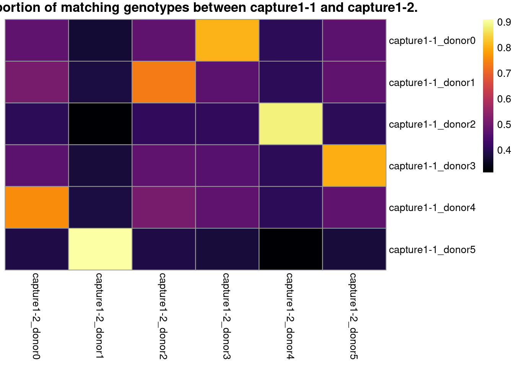
| Version | Author | Date |
|---|---|---|
| 22814cb | tcwong1994 | 2026-04-24 |
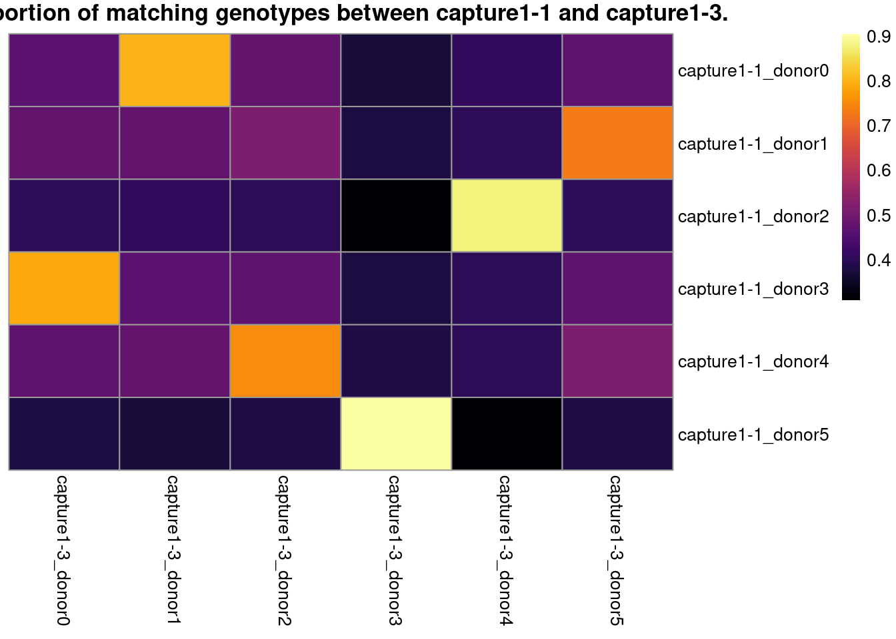
| Version | Author | Date |
|---|---|---|
| 22814cb | tcwong1994 | 2026-04-24 |
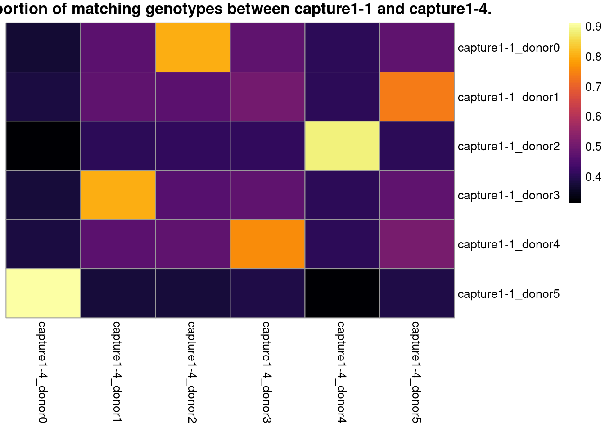
| Version | Author | Date |
|---|---|---|
| 22814cb | tcwong1994 | 2026-04-24 |
# add genetic donor name
f.best_match_df$genetic_donor <- paste0("donor_", LETTERS[1:length(donor_names)])
knitr::kable(
dplyr::select(f.best_match_df, genetic_donor, everything()),
caption = "Best match between donors from the two captures.",
row.names = FALSE)| genetic_donor | cn1 | cn2 | cn3 | cn4 |
|---|---|---|---|---|
| donor_A | capture1-1_donor0 | capture1-2_donor3 | capture1-3_donor1 | capture1-4_donor2 |
| donor_B | capture1-1_donor1 | capture1-2_donor2 | capture1-3_donor5 | capture1-4_donor5 |
| donor_C | capture1-1_donor2 | capture1-2_donor4 | capture1-3_donor4 | capture1-4_donor4 |
| donor_D | capture1-1_donor3 | capture1-2_donor5 | capture1-3_donor0 | capture1-4_donor1 |
| donor_E | capture1-1_donor4 | capture1-2_donor0 | capture1-3_donor2 | capture1-4_donor3 |
| donor_F | capture1-1_donor5 | capture1-2_donor1 | capture1-3_donor3 | capture1-4_donor0 |
# transform to a long data frame
best_match_long_df <- tidyr::pivot_longer(
data=f.best_match_df,
cols=starts_with("cn")) %>%
dplyr::select(genetic_donor, value)6.4 Add genetic demultiplexing results to SCE
# add genetic donor to SCE object
sce$vireo <- DataFrame(
vireo_df[, setdiff(colnames(vireo_df), c("cell", "colname"))])
sce$genetic_donor <- left_join(
vireo_df,
best_match_long_df,
by = c("donor_id" = "value")) %>%
mutate(
genetic_donor = factor(
case_when(
is.na(genetic_donor) ~ sub(paste0(batch_name,"-[0-9]_"), "", donor_id), ###
TRUE ~ genetic_donor),
levels = c(paste0("donor_", LETTERS[1:length(donor_names)]), "Doublet", "Negative"))) %>%
pull(genetic_donor)
# generate a table of HTO to genetic droplets
tb <- as.data.frame.matrix(
table(as.data.frame(colData(sce)[, c("sampleID.HTO", "genetic_donor")]))) %>%
dplyr::select(1:length(donor_names)) %>% # discard columns of Doublets and Negatives
slice_head(n=length(samples)) # discard rows of Doublets and Negatives
# match donor to sample ID according to the best match with HTO
sampleID.genetics <- setNames(c(rownames(tb)[apply(tb, MARGIN = 2, which.max)],
"Doublet","Negative"),
c(colnames(tb),
"Doublet","Negative"))
sampleID.genetics <- sampleID.genetics[sce$genetic_donor]
names(sampleID.genetics) <- colnames(sce)
sce$sampleID.genetics <- factor(sampleID.genetics,
levels=c(samples,"Doublet","Negative"))7 Visualize genetic demultiplexing results
7.1 Table of number of droplets
janitor::tabyl(
as.data.frame(colData(sce)[, c("HTODemux.ID", "genetic_donor")]),
HTODemux.ID,
genetic_donor) |>
adorn_title(placement = "combined") |>
adorn_totals("both") |>
knitr::kable(
caption = "Number of droplets assigned to each `HTO`/`Genetic donor` combination.")| HTODemux.ID/genetic_donor | donor_A | donor_B | donor_C | donor_D | donor_E | donor_F | Doublet | Negative | Total |
|---|---|---|---|---|---|---|---|---|---|
| Human_HTO_3 | 17 | 5 | 7878 | 11 | 9 | 79 | 182 | 2209 | 10390 |
| Human_HTO_6 | 9 | 3 | 9985 | 5 | 7 | 68 | 200 | 1504 | 11781 |
| Human_HTO_7 | 8 | 2131 | 15 | 1 | 11 | 90 | 50 | 1448 | 3754 |
| Human_HTO_8 | 13 | 3449 | 7 | 11 | 9 | 64 | 77 | 1506 | 5136 |
| Human_HTO_10 | 13 | 16 | 19 | 12 | 19 | 10124 | 69 | 3008 | 13280 |
| Human_HTO_12 | 6 | 3 | 6 | 4 | 9 | 11937 | 41 | 1623 | 13629 |
| Human_HTO_13 | 9 | 2 | 12 | 3 | 3154 | 60 | 85 | 1100 | 4425 |
| Human_HTO_14 | 7 | 5 | 9 | 5 | 4196 | 67 | 88 | 1074 | 5451 |
| Human_HTO_15 | 10212 | 7 | 14 | 13 | 12 | 76 | 196 | 1590 | 12120 |
| Human_HTO_16 | 9 | 4 | 12 | 8978 | 6 | 69 | 182 | 1825 | 11085 |
| Doublet | 2630 | 1300 | 5075 | 2297 | 1652 | 6012 | 12994 | 5675 | 37635 |
| Negative | 512 | 407 | 452 | 294 | 265 | 5252 | 774 | 6407 | 14363 |
| Total | 13445 | 7332 | 23484 | 11634 | 9349 | 33898 | 14938 | 28969 | 143049 |
7.2 Number of droplets (named by HTO and genetic donor)
# add colour
genetic_donor_colours <- setNames(
c(palette.colors(nlevels(sce$genetic_donor)-2, "Set3"), "#d4a276","#9c6644"),
levels(sce$genetic_donor))
sce$colours$genetic_donor_colours <- genetic_donor_colours[sce$genetic_donor]
# number of droplets assigned by HTO method
p1 <- ggcells(sce) +
geom_bar(aes(x = HTODemux.ID, fill = HTODemux.ID)) +
geom_text(stat='count', aes(x = HTODemux.ID, label=..count..),
hjust=1, size=2) +
coord_flip() +
ylab("Number of droplets") +
theme_cowplot(font_size = 8) +
scale_y_continuous(breaks=seq(0,40000,8000),limits=c(0,40000)) +
scale_fill_manual(values = sce$colours$hto_colours) +
theme(axis.text.x=element_text(angle=45, hjust=1))
p1.facet <- ggcells(sce) +
geom_bar(aes(x = HTODemux.ID, fill = HTODemux.ID)) +
geom_text(stat='count', aes(x = HTODemux.ID, label=..count..),
hjust=0, size=2) +
ylab("Number of droplets") +
facet_grid(~Capture, scales = "fixed", space = "fixed") +
theme_cowplot(font_size = 8) +
scale_y_continuous(breaks=seq(0,16000,4000), limits=c(0,16000)) +
scale_fill_manual(values = sce$colours$hto_colours) +
theme(axis.title.y = element_blank(),
axis.text.x=element_text(angle=45, hjust=1)) +
coord_flip()
# number of droplets assigned by genetic method
p2 <- ggcells(sce) +
geom_bar(aes(x = genetic_donor, fill = genetic_donor)) +
geom_text(stat='count', aes(x = genetic_donor, label=..count..,),
hjust=1, size=2) +
coord_flip() +
ylab("Number of droplets") +
theme_cowplot(font_size = 8) +
scale_y_continuous(breaks=seq(0,40000,8000),limits=c(0,40000)) +
scale_fill_manual(values = sce$colours$genetic_donor_colours) +
theme(axis.text.x=element_text(angle=45, hjust=1))
p2.facet <- ggcells(sce) +
geom_bar(aes(x = genetic_donor, fill = genetic_donor)) +
geom_text(stat='count', aes(x = genetic_donor, label=..count..),
hjust=1, size=2) +
ylab("Number of droplets") +
facet_grid(~Capture, scales = "fixed", space = "fixed") +
theme_cowplot(font_size = 8) +
scale_y_continuous(breaks=seq(0,16000,4000), limits=c(0,16000)) +
scale_fill_manual(values = sce$colours$genetic_donor_colours) +
theme(axis.title.y = element_blank(),
axis.text.x=element_text(angle=45, hjust=1)) +
coord_flip()
(p1 + p1.facet+plot_layout(width=c(1,2))) /
(p2 + p2.facet+plot_layout(width=c(1,2))) +
plot_layout(guides="collect")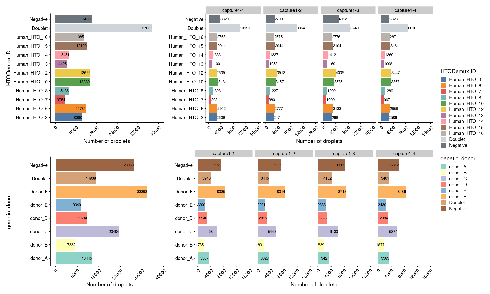
| Version | Author | Date |
|---|---|---|
| 22814cb | tcwong1994 | 2026-04-24 |
7.3 Proportion of droplets (named by HTO and genetic donor)
# proportion of genetically assigned droplets in each HTO
p3 <- ggcells(sce) +
geom_bar(
aes(x = HTODemux.ID, fill = genetic_donor),
position = position_fill(reverse = TRUE)) +
coord_flip() +
ylab("Frequency") +
theme_cowplot(font_size = 8) +
scale_fill_manual(values = sce$colours$genetic_donor_colours)
# proportion of HTO assigned droplets in each genetic donor
p4 <- ggcells(sce) +
geom_bar(
aes(x = genetic_donor, fill = HTODemux.ID),
position = position_fill(reverse = TRUE)) +
coord_flip() +
ylab("Frequency") +
theme_cowplot(font_size = 8) +
scale_fill_manual(values = sce$colours$hto_colours)
(p3 + p3 + facet_grid(~Capture) + plot_layout(widths = c(1, 2))) /
(p4 + p4 + facet_grid(~Capture) + plot_layout(widths = c(1, 2))) +
plot_layout(guides = "collect")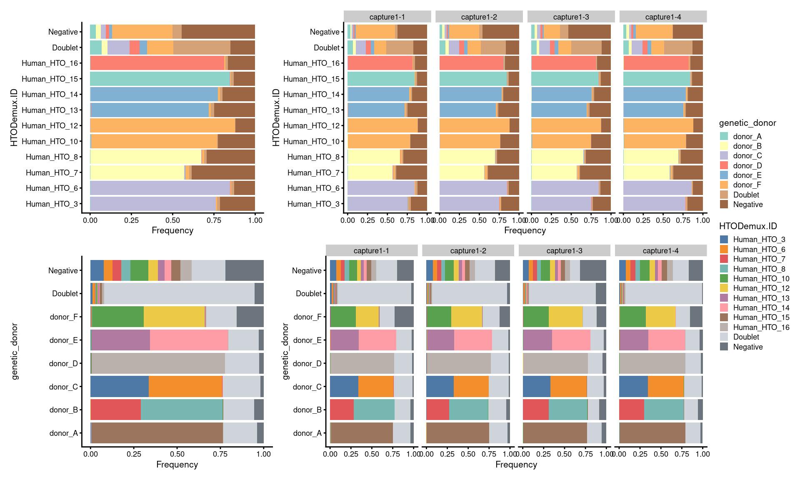
| Version | Author | Date |
|---|---|---|
| 22814cb | tcwong1994 | 2026-04-24 |
7.4 Number of droplets (named by sample ID)
# add colour
sampleID.HTO_colours <- setNames(
c(palette.colors(nlevels(sce$sampleID.HTO)-2, "Tableau 10"), "#ced4da","#6c757d"),
levels(sce$sampleID.HTO))
sce$colours$sampleID.HTO_colours <- sampleID.HTO_colours[sce$sampleID.HTO]
sampleID.genetics_colours <- setNames(
c(palette.colors(nlevels(sce$sampleID.genetics)-2, "Set3"), "#d4a276","#9c6644"),
levels(sce$sampleID.genetics))
sce$colours$sampleID.genetics_colours <- sampleID.genetics_colours[sce$sampleID.genetics]
# number of droplets assigned by HTO method
p5 <- ggcells(sce) +
geom_bar(aes(x = sampleID.HTO, fill = sampleID.HTO)) +
geom_text(stat='count', aes(x = sampleID.HTO, label=..count..), hjust=1, size=2) +
coord_flip() +
ggtitle("By HTO") +
ylab("Number of droplets") +
theme_cowplot(font_size = 8) +
scale_y_continuous(breaks=seq(0,40000,8000),limits=c(0,40000)) +
scale_fill_manual(values = sce$colours$sampleID.HTO_colours) +
theme(axis.title.y = element_blank(),
axis.text.x=element_text(angle=45, hjust=1)) +
guides(fill=guide_legend(title="sampleID"))
p5.facet <- ggcells(sce) +
geom_bar(aes(x = sampleID.HTO, fill = sampleID.HTO)) +
geom_text(stat='count', aes(x = sampleID.HTO, label=..count..),
hjust=0, size=2) +
#ggtitle("By HTO") +
ylab("Number of droplets") +
facet_grid(~Capture, scales = "fixed", space = "fixed") +
scale_y_continuous(breaks=seq(0,12000,3000), limits=c(0,12000)) +
theme_cowplot(font_size = 8) +
scale_fill_manual(values = sce$colours$sampleID.HTO_colours) +
theme(axis.title.y = element_blank(),
axis.text.x=element_text(angle=45, hjust=1)) +
guides(fill=guide_legend(title="sampleID")) +
coord_flip()
# number of droplets assigned by genetic method
p6 <- ggcells(sce) +
geom_bar(aes(x = sampleID.genetics, fill = sampleID.genetics)) +
geom_text(stat='count', aes(x = sampleID.genetics, label=..count..), hjust=1, size=2) +
coord_flip() +
ggtitle("By genetics") +
ylab("Number of droplets") +
theme_cowplot(font_size = 8) +
scale_y_continuous(breaks=seq(0,40000,8000), limits = c(0,40000)) +
scale_x_discrete(labels=gsub(".t[1-2]","",
levels(fct_drop(sce$sampleID.genetics)))) +
scale_fill_manual(values = sce$colours$sampleID.genetics_colours) +
theme(axis.title.y = element_blank(),
axis.text.x=element_text(angle=45, hjust=1)) +
guides(fill=FALSE)
p6.facet <- ggcells(sce) +
geom_bar(aes(x = sampleID.genetics, fill = sampleID.genetics)) +
geom_text(stat='count', aes(x = sampleID.genetics, label=..count..),
hjust=1, size=2) +
#ggtitle("By genetics") +
ylab("Number of droplets") +
facet_grid(~Capture, space = "fixed", scales = "fixed") +
scale_y_continuous(breaks=seq(0,12000,3000), limits=c(0,12000)) +
theme_cowplot(font_size = 8) +
scale_x_discrete(labels=gsub(".t[1-2]","",
levels(fct_drop(sce$sampleID.genetics)))) +
scale_fill_manual(values = sce$colours$sampleID.genetics_colours) +
theme(axis.title.y = element_blank(),
axis.text.x=element_text(angle=45, hjust=1)) +
guides(fill=guide_legend(title="sampleID")) +
coord_flip()
(p5+p5.facet+plot_layout(width=c(1,2))) /
(p6+p6.facet+plot_layout(width=c(1,2))) +
plot_layout(guides="collect")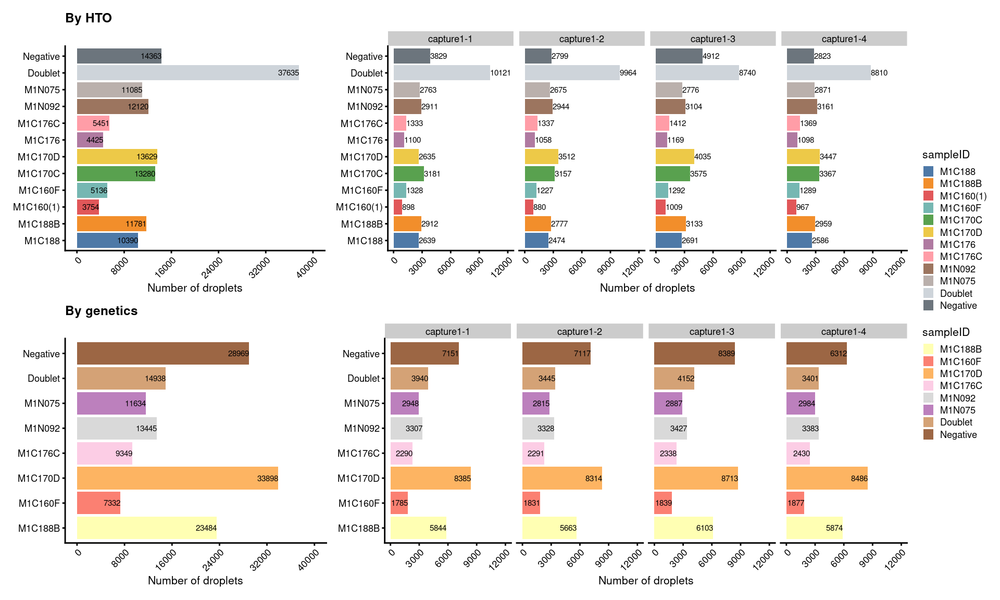
| Version | Author | Date |
|---|---|---|
| 22814cb | tcwong1994 | 2026-04-24 |
7.5 Proportion of droplets (named by sample ID)
# proportion of genetically assigned droplets in each HTO
p7 <- ggcells(sce) +
geom_bar(
aes(x = sampleID.HTO, fill = sampleID.genetics),
position = position_fill(reverse = TRUE)) +
coord_flip() +
ylab("Frequency") +
theme_cowplot(font_size = 8) +
scale_fill_manual(values = sce$colours$sampleID.genetics_colours)
# proportion of HTO assigned droplets in each genetic donor
p8 <- ggcells(sce) +
geom_bar(
aes(x = sampleID.genetics, fill = sampleID.HTO),
position = position_fill(reverse = TRUE)) +
coord_flip() +
ylab("Frequency") +
theme_cowplot(font_size = 8) +
scale_fill_manual(values = sce$colours$sampleID.HTO_colours)
((p7 + ggtitle("By HTO")) +
p7 + facet_grid(~Capture) + plot_layout(widths = c(1, 2))) /
((p8 + ggtitle("By genetics")) +
p8 + facet_grid(~Capture) + plot_layout(widths = c(1, 2))) +
plot_layout(guides = "collect")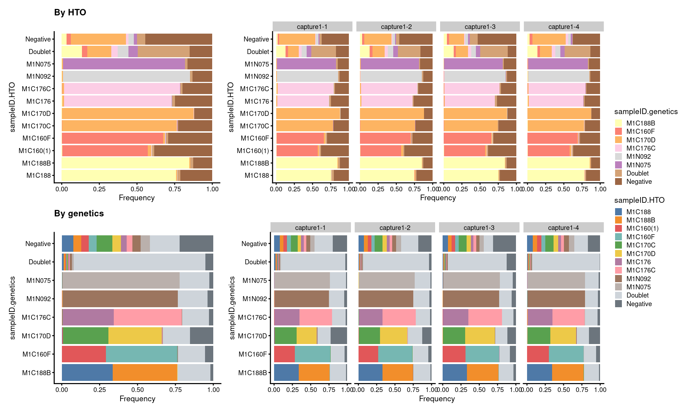
| Version | Author | Date |
|---|---|---|
| 22814cb | tcwong1994 | 2026-04-24 |
8 Save object
demux_dir <- here("data","SCEs","demux")
if(!dir.exists(demux_dir)) {
dir.create(demux_dir, recursive = TRUE)
}
out <- paste0(demux_dir,'/',
paste0(batch_name,".cellbender.demux.SCE.rds"))
if(!file.exists(out)) saveRDS(sce, out)
sessionInfo()R version 4.1.2 (2021-11-01)
Platform: x86_64-pc-linux-gnu (64-bit)
Running under: CentOS Linux 7 (Core)
Matrix products: default
BLAS: /hpc/software/installed/R/4.1.2/lib64/R/lib/libRblas.so
LAPACK: /hpc/software/installed/R/4.1.2/lib64/R/lib/libRlapack.so
locale:
[1] LC_CTYPE=en_US.UTF-8 LC_NUMERIC=C
[3] LC_TIME=en_US.UTF-8 LC_COLLATE=en_US.UTF-8
[5] LC_MONETARY=en_US.UTF-8 LC_MESSAGES=en_US.UTF-8
[7] LC_PAPER=en_US.UTF-8 LC_NAME=C
[9] LC_ADDRESS=C LC_TELEPHONE=C
[11] LC_MEASUREMENT=en_US.UTF-8 LC_IDENTIFICATION=C
attached base packages:
[1] stats4 stats graphics grDevices utils datasets methods
[8] base
other attached packages:
[1] forcats_1.0.1 stringr_1.5.1
[3] janitor_2.1.0 vcfR_1.12.0
[5] dplyr_1.1.4 scater_1.22.0
[7] scuttle_1.4.0 patchwork_1.2.0
[9] cowplot_1.1.3 SeuratObject_5.0.1
[11] Seurat_4.4.0 ggplot2_3.5.2
[13] here_1.0.1 DropletUtils_1.14.2
[15] SingleCellExperiment_1.16.0 SummarizedExperiment_1.24.0
[17] Biobase_2.54.0 GenomicRanges_1.46.1
[19] GenomeInfoDb_1.30.1 IRanges_2.28.0
[21] S4Vectors_0.32.4 BiocGenerics_0.40.0
[23] MatrixGenerics_1.6.0 matrixStats_1.1.0
[25] workflowr_1.7.0
loaded via a namespace (and not attached):
[1] utf8_1.2.4 spatstat.explore_3.2-7
[3] reticulate_1.36.1.9000 R.utils_2.12.2
[5] tidyselect_1.2.1 htmlwidgets_1.6.4
[7] grid_4.1.2 BiocParallel_1.28.3
[9] Rtsne_0.17 munsell_0.5.1
[11] ScaledMatrix_1.2.0 codetools_0.2-20
[13] ica_1.0-3 statmod_1.5.0
[15] future_1.33.2 miniUI_0.1.1.1
[17] withr_3.0.0 spatstat.random_3.2-3
[19] colorspace_2.1-0 progressr_0.14.0
[21] highr_0.10 knitr_1.46
[23] rstudioapi_0.13 ROCR_1.0-11
[25] tensor_1.5.1 listenv_0.9.1
[27] labeling_0.4.3 git2r_0.31.0
[29] GenomeInfoDbData_1.2.11 polyclip_1.10-6
[31] pheatmap_1.0.12 farver_2.1.1
[33] rhdf5_2.38.1 rprojroot_2.1.1
[35] parallelly_1.37.1 vctrs_0.6.5
[37] generics_0.1.3 xfun_0.43
[39] R6_2.6.1 ggbeeswarm_0.6.0
[41] rsvd_1.0.5 locfit_1.5-9.4
[43] bitops_1.0-9 rhdf5filters_1.6.0
[45] spatstat.utils_3.1-3 DelayedArray_0.20.0
[47] promises_1.3.0 scales_1.3.0
[49] pinfsc50_1.2.0 beeswarm_0.4.0
[51] gtable_0.3.5 beachmat_2.10.0
[53] globals_0.16.3 processx_3.8.0
[55] goftest_1.2-3 xaringanExtra_0.7.0
[57] spam_2.10-0 rlang_1.1.3
[59] splines_4.1.2 lazyeval_0.2.2
[61] spatstat.geom_3.2-9 yaml_2.3.8
[63] reshape2_1.4.4 abind_1.4-8
[65] httpuv_1.6.15 tools_4.1.2
[67] jquerylib_0.1.4 RColorBrewer_1.1-3
[69] ggridges_0.5.6 Rcpp_1.0.12
[71] plyr_1.8.9 sparseMatrixStats_1.6.0
[73] zlibbioc_1.48.2 purrr_1.2.1
[75] RCurl_1.98-1.9 ps_1.7.2
[77] deldir_2.0-4 viridis_0.6.2
[79] pbapply_1.7-2 zoo_1.8-12
[81] ggrepel_0.9.1 cluster_2.1.8.1
[83] fs_1.6.4 magrittr_2.0.3
[85] data.table_1.15.4 scattermore_1.2
[87] lmtest_0.9-40 RANN_2.6.1
[89] whisker_0.4 fitdistrplus_1.1-11
[91] mime_0.12 evaluate_0.23
[93] xtable_1.8-4 gridExtra_2.3
[95] compiler_4.1.2 tibble_3.2.1
[97] KernSmooth_2.23-20 R.oo_1.24.0
[99] htmltools_0.5.8.1 mgcv_1.8-39
[101] later_1.3.2 tidyr_1.3.1
[103] lubridate_1.8.0 MASS_7.3-55
[105] Matrix_1.6-5 permute_0.9-7
[107] cli_3.6.2 R.methodsS3_1.8.1
[109] parallel_4.1.2 dotCall64_1.1-1
[111] igraph_2.0.3 pkgconfig_2.0.3
[113] getPass_0.2-2 sp_2.1-3
[115] plotly_4.10.4.9000 spatstat.sparse_3.0-3
[117] memuse_4.2-1 vipor_0.4.5
[119] bslib_0.3.1 dqrng_0.3.2
[121] XVector_0.34.0 snakecase_0.11.0
[123] callr_3.7.3 digest_0.6.35
[125] sctransform_0.4.1 RcppAnnoy_0.0.22
[127] vegan_2.5-7 spatstat.data_3.0-4
[129] rmarkdown_2.26 leiden_0.4.3.1
[131] uwot_0.1.14 edgeR_4.4.2
[133] DelayedMatrixStats_1.16.0 shiny_1.8.1.1
[135] lifecycle_1.0.4 nlme_3.1-155
[137] jsonlite_1.8.8 Rhdf5lib_1.16.0
[139] BiocNeighbors_1.12.0 viridisLite_0.4.2
[141] limma_3.62.2 fansi_1.0.6
[143] pillar_1.9.0 lattice_0.22-7
[145] ggrastr_1.0.1 fastmap_1.1.1
[147] httr_1.4.7 survival_3.2-13
[149] glue_1.7.0 png_0.1-8
[151] stringi_1.8.3 sass_0.4.9
[153] HDF5Array_1.22.1 BiocSingular_1.10.0
[155] ape_5.6-1 irlba_2.3.5.1
[157] future.apply_1.11.2